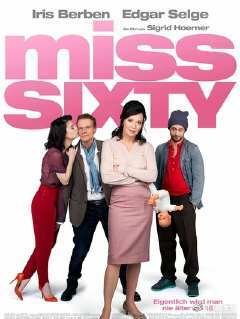

#女性# 看到@写字楼大妈 的《60岁小姐》影评，感兴趣找来看完了。说一个60岁的分子生物学家路易斯退休后，发现自己40岁冷冻的卵子还可以用，就想自己怀孕生孩子，电影中给了个数据，有63岁的英国女性用别人的卵子和丈夫的精子，生下了个孩子，而世界上最老的妈妈是74岁的一个印度女性，生了她的孙子，卵子来自于她的女儿，因为她的女儿不能生育。
女性的可生育时间还是超出了我的想象呢。
看影片觉得德国对女性挺宽容，但是这个60岁生物学家要怀孕生孩子的事情还是上了报纸。说明虽然有宽容的环境，可是能这么做的还是极少数人。为躲避新闻带来的周围社会压力，路易斯计划跟妈妈到外面去旅游，避过这段风头。
路易斯从很多资料里随机选择了某个男性的精子，当她去考察这个男性的时候，却被误以为是在跟踪这个男性的爸爸弗兰斯。阴差阳错，路易斯跟弗兰斯交往起来。后来弗兰斯发现路易斯跟踪自己，其实是为了他儿子的精子，气坏了。
其实不管路易斯，还是弗兰斯，都面临衰老的问题，而他们抵抗衰老的方式还很不一样，弗兰斯是通过不断约会20多岁年轻女孩，来证明自己年轻，而且还盲目自信，认为年轻女孩是真的爱他。而路易斯抵抗衰老的方式是生个自己的孩子，用延续生命的方式来抵抗衰老阶段的孤独寂寞。
里面的母女关系和父子关系对比，也比较有意思，
路易斯和她的母亲像朋友也像盟友，不管路易斯是怎么样的不合群，不结婚不生孩子，以及60岁才想要生孩子，她母亲都非常理解并支持她，虽然她母亲是一个典型的家庭妇女。
而弗兰斯的儿子在看到老爹的20岁情人时，脸上出现的是很复杂的表情，觉得他老爹不应该跟这么年轻的女孩子约会，而当儿子得知露易丝选择了他的精子，儿子也觉得很自豪，这是他对父亲的胜利。父子似乎只能是竞争者的关系。
这个电影是个轻喜剧，有个happy ending，我就不剧透了。
女性的可生育时间还是超出了我的想象呢。
看影片觉得德国对女性挺宽容，但是这个60岁生物学家要怀孕生孩子的事情还是上了报纸。说明虽然有宽容的环境，可是能这么做的还是极少数人。为躲避新闻带来的周围社会压力，路易斯计划跟妈妈到外面去旅游，避过这段风头。
路易斯从很多资料里随机选择了某个男性的精子，当她去考察这个男性的时候，却被误以为是在跟踪这个男性的爸爸弗兰斯。阴差阳错，路易斯跟弗兰斯交往起来。后来弗兰斯发现路易斯跟踪自己，其实是为了他儿子的精子，气坏了。
其实不管路易斯，还是弗兰斯，都面临衰老的问题，而他们抵抗衰老的方式还很不一样，弗兰斯是通过不断约会20多岁年轻女孩，来证明自己年轻，而且还盲目自信，认为年轻女孩是真的爱他。而路易斯抵抗衰老的方式是生个自己的孩子，用延续生命的方式来抵抗衰老阶段的孤独寂寞。
里面的母女关系和父子关系对比，也比较有意思，
路易斯和她的母亲像朋友也像盟友，不管路易斯是怎么样的不合群，不结婚不生孩子，以及60岁才想要生孩子，她母亲都非常理解并支持她，虽然她母亲是一个典型的家庭妇女。
而弗兰斯的儿子在看到老爹的20岁情人时，脸上出现的是很复杂的表情，觉得他老爹不应该跟这么年轻的女孩子约会，而当儿子得知露易丝选择了他的精子，儿子也觉得很自豪，这是他对父亲的胜利。父子似乎只能是竞争者的关系。
这个电影是个轻喜剧，有个happy ending，我就不剧透了。
- 